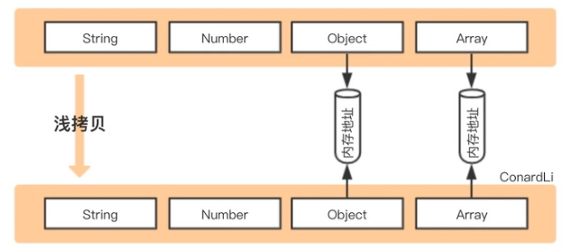
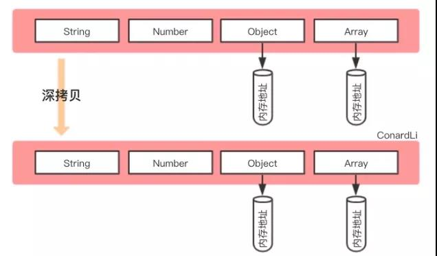

这篇关于浅拷贝与深拷贝的介绍和实现📁。
前言
- 先看下看一下下面这个例子热热身, 是不是很奇妙😅。
1 | var a1 = { |
- 对了本文章用到的一些知识点,先看一下，可以帮助你更深刻的理解。
obj.hasOwnProperty[i]： 判断对象是否存在这个属性instanceof： 判断引用类型(必须为引用类型)，如Date,Object,RegExp(正则)typeof obj：检测一个变量的类型。能检测:undefined,number,string,object,function,blooean.(注意：null typeof返回"object")
区别
- 浅拷贝的基础类型会拷贝，但是引用类型的地址会与拷贝的对象指向同一个地址地址，所以一个对象的值改变会导致另一个对象也跟之变。
- 深拷贝将两个对象完全分离出来。
这里放个图以便大家理解：


实现
- 浅拷贝
1 | function shallowClone(sourse) { |
- 深拷贝
1 | function deepClone(obj) { |